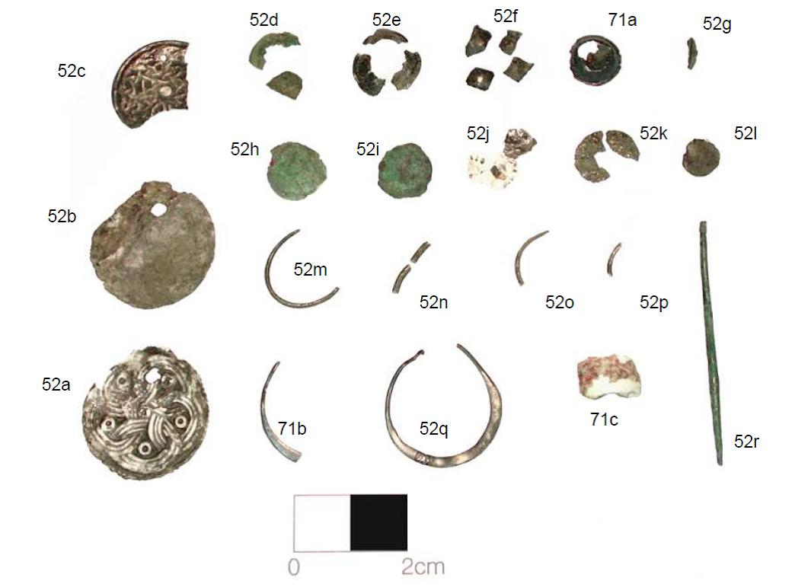
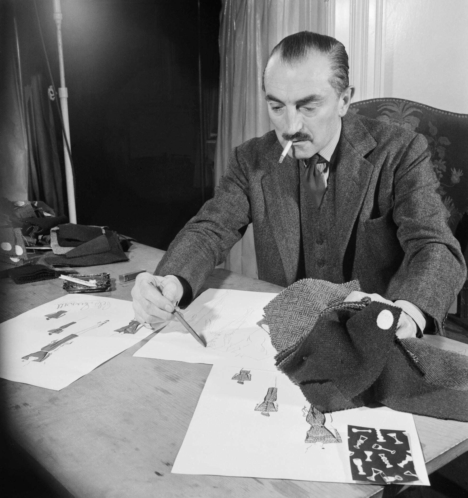
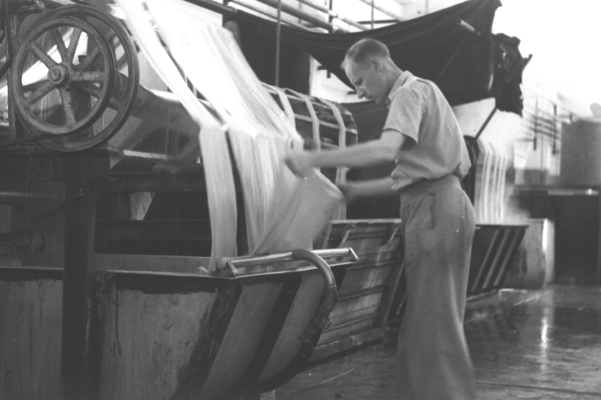
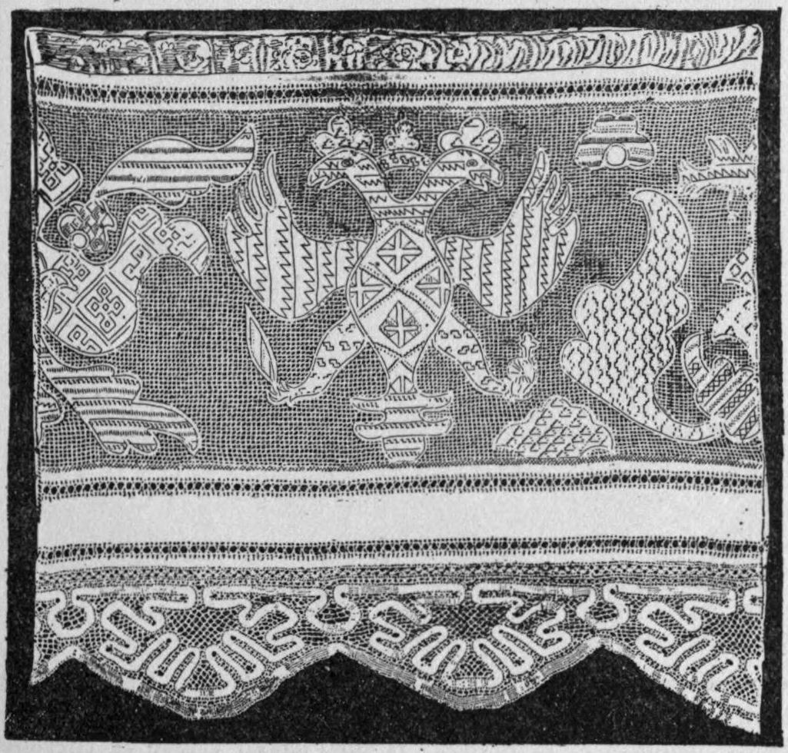

The Lineage of Broderie Anglaise
Tracing the evolution of nineteenth-century European whitework, St. Gallen eyelet craftsmanship, and the dedicated needlewomen who elevated pierced cutwork into haute couture.
From Czech Monasteries to Victorian High Society
Despite bearing the moniker 'English Embroidery' (Broderie Anglaise), the technique originated in sixteenth-century Eastern European convent workshops, where nuns practiced rigorous whitework to adorn altar vestments.
By the 1840s, British gentlewomen embraced the craft with fervor, developing the characteristic floral sprigs, vine garlands, and scalloped edges that became the international uniform of Victorian summer elegance.
Broderie Flair safeguards this living heritage. We preserve the original manual disciplines of the craft, rejecting laser cutters and polyester threads in favor of hand-held bone stilettos and unbleached long-staple cotton threads.

Swiss Cotton Batiste & Irish Cambric Linen
The structural integrity of eyelet cutwork depends completely on the tight, uniform weave of the foundation cloth. If the fabric threads are loose or uneven, pierced eyelets will stretch into distorted ovals under needle tension.
Our atelier sources exclusively from heritage weaving mills in the Appenzell region of Switzerland and County Antrim, Ireland. Here, combed Egyptian Giza cotton is spun into ultra-fine 200-count yarns and woven on slow shuttle looms.
The resulting cotton batiste possesses a luminous, semi-translucent luster and high tensile density, allowing our embroiderers to punch intricate clusters of millimeter-scale eyelets without compromising fabric stability.

Four Tenets of Our Mercer Street Atelier
Every bespoke garment produced in our New York salon is measured against four uncompromising needlework disciplines.
1. Non-Destructive Stiletto Piercing
We never punch holes with hollow punch-cutters that discard cloth. Our artisans use conical bone stilettos that gently displace warp and weft yarns, preserving fiber mass to be bound by overcast stitches.
2. Corded Cordonnet Underlays
Before scalloped hem edges or raised petals are satin-stitched, thick cotton tracing cords are laid down by hand. This internal armature gives our embroidery its architectural relief and prevents edge curling.
3. Pure Botanical Fibers
We reject synthetic polyester or rayon embroidery flosses that melt under irons and degrade under UV light. Our threads are 100% natural Egyptian mako cotton and filament mulberry silk that age gracefully for generations.
4. Museum-Grade Cold Blocking
Completed embroideries are never squashed under dry industrial pressers. They are wet-blocked on padded birchwood frames and hand-pressed with gentle steam over felted wool pads, preserving delicate three-dimensional stitch loft.
St. Gallen Mechanical Heritage & Bobbin Guilds
Understanding the delicate boundary between historic mechanical eyelet looms and pure manual pillow needlecraft.

St. Gallen ArchivesNineteenth-Century Swiss Eyelet Looms
Archival documentation preserving the pantograph needle arrays developed in Eastern Switzerland during the golden age of European whitework.

Bobbin CraftTurned Hardwood Lace Bobbins
Pillow lace instruments utilized by our guild to construct delicate Valenciennes and Cluny bridging grounds for mixed-media couture gowns.